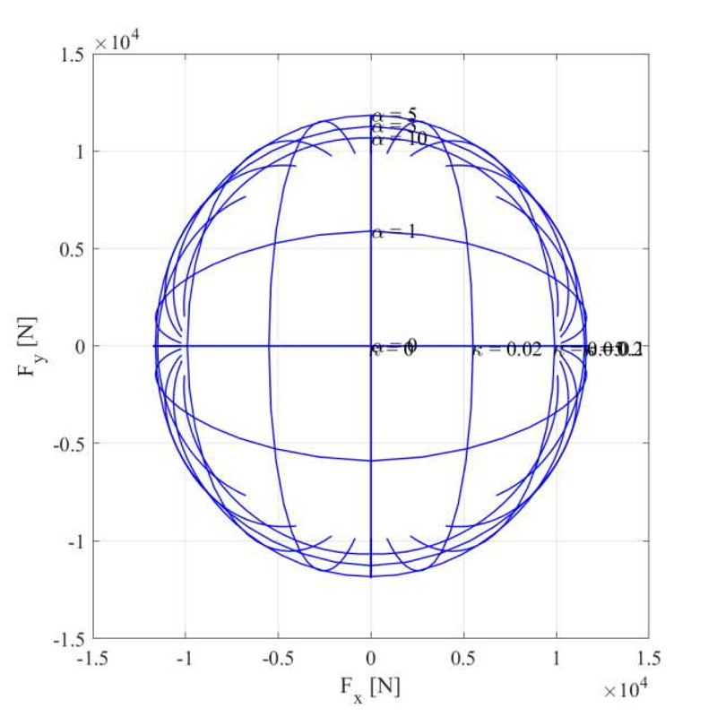
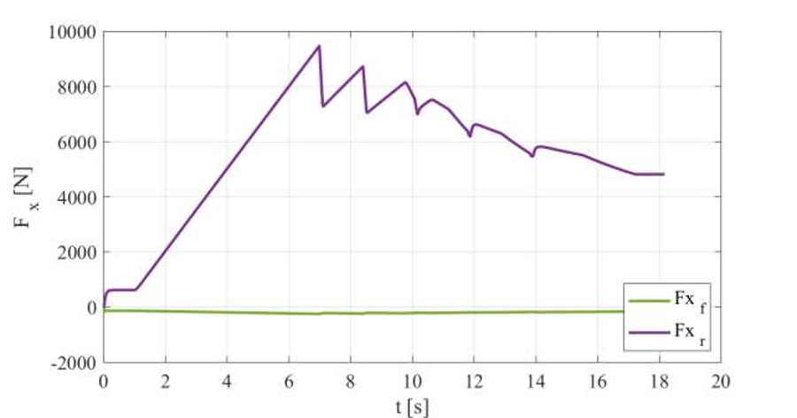
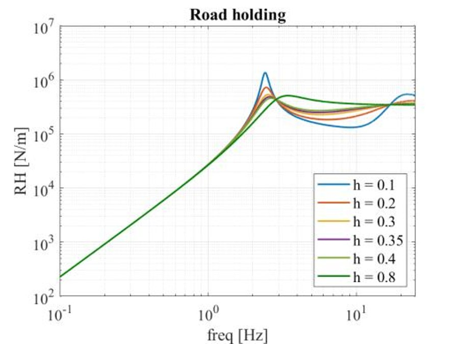
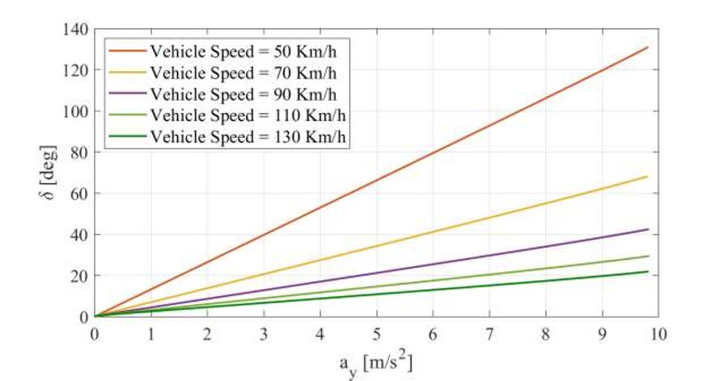
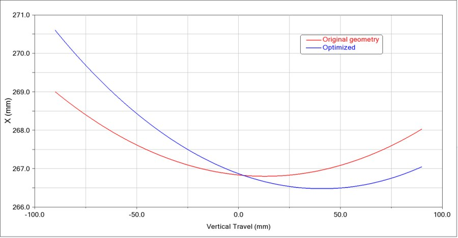
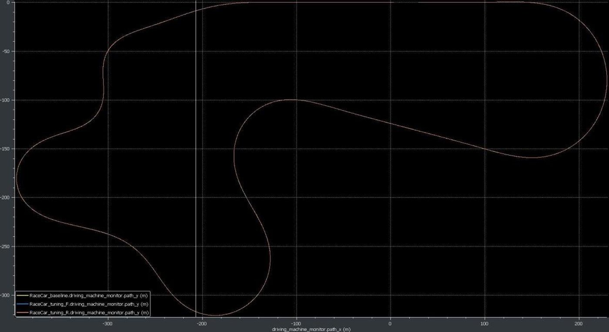

Vehicle Dynamics and Control
A full-vehicle dynamics study of a race car developed for the "Vehicle Dynamics and Control" course at Politecnico di Milano, progressing from tire characterization to longitudinal, vertical and lateral dynamics, multibody suspension and full-vehicle simulation, and lap-time simulation. Each lab below builds on the results of the previous one, culminating in a full-circuit simulation studying the effect of aerodynamic balance on lap performance.
Tire Lab — Combined-Slip Grip Modeling

The starting point of the study is a combined-slip tire model, characterizing how the tire's longitudinal (Fx) and lateral (Fy) grip interact through the friction ellipse shown on the left: for a given slip angle α, the available Fx shrinks as more lateral force is demanded, and vice versa for Fy as a function of slip ratio κ — the fundamental trade-off behind every braking-while-cornering and traction-while-cornering maneuver.
The model was then characterized against its main sensitivities: combined slip (Fx collapsing as slip angle α increases, left), vertical load Fz (grip growing with load but with diminishing returns, center), and road friction coefficient μ (grip scaling down proportionally on low-grip surfaces, right) — together with the tire's transient response to fast slip oscillations, which sets the bandwidth limits for any controller built on top of this model.
Longitudinal Dynamics Lab

Using the tire model above, motor working points were derived for different accelerator positions, and a front/rear ideal force and brake-pressure distribution was computed to keep both axles at their combined-slip limit simultaneously. A closed-loop longitudinal speed controller (PI, gains tuned per target speed) was then designed and validated against step speed targets and wind gust disturbances at highway speeds, with the resulting front/rear force split shown on the left for a representative traction event.
Vehicle Vertical Dynamics Lab

A quarter-car model was used to study ride comfort and road holding as a function of the front/rear damper's damping ratio h, comparing passive, semi-active (skyhook-like) and active suspension strategies across ISO road roughness classes A and B. The road-holding frequency response (left) highlights the classic trade-off: low damping improves comfort but produces a pronounced wheel-hop resonance peak, while higher damping flattens the response at the cost of transmitted vibration — informing the selection of h=0.35 (front) and h=0.4 (rear) adopted for the rest of the study.
Vehicle Lateral Dynamics Lab 1 & 2
A linearized single-track (bicycle) model was used to study the effect of roll-stiffness distribution (kroll) on the effective axle cornering characteristics (left) and on the vehicle's yaw/sideslip stability, tracked via the root locus of the linearized eigenvalues (right) as speed increases. The resulting handling behavior was then verified with the full non-linear model under steady-state cornering (steering pad) and transient maneuvers — step steer, sine dwell and sine sweep — at multiple speeds and roll-stiffness settings.

The handling diagram on the left (steering angle required per unit lateral acceleration, at multiple speeds) summarizes the vehicle's understeer/oversteer balance across the speed range, closing the loop between the single-track model predictions and the full nonlinear vehicle's cornering behavior. Path-following control was then added to track double-lane-change and sine-sweep trajectories, comparing the linearized and full nonlinear vehicle models.
ADAMS Suspensions & Full Vehicle Lab

The suspension's kinematic hardpoints (lower control arm and tie-rod outboard points) were re-optimized in ADAMS/Car to minimize unwanted wheel travel-induced steer, comparing the original and optimized geometries (left). The full vehicle was then assembled and tested in ADAMS under step steer, single- and double-lane-change, and constant-radius cornering maneuvers to validate the multibody model against the analytical single-track predictions from the previous labs.
VI-Grade Lab — Lap Simulation

The study concluded with a VI-Grade driver-in-the-loop simulation of a full flying lap (trajectory shown on the left), used to evaluate the effect of front/rear anti-roll bar configuration on step-steer response, and — on a race-car aero model — the effect of front/rear aerodynamic downforce balance on lap trajectory, lateral acceleration, and aerodynamic drag, comparing a forward-biased, rearward-biased and balanced downforce split against the same baseline lap.
Tools and Technologies
- Simulation & Modeling: MATLAB/Simulink (tire, longitudinal, lateral and vertical dynamics), ADAMS/Car (suspension kinematics & compliance), ADAMS Full Vehicle, VI-Grade (lap simulation)
- Key Concepts: Combined-slip tire modeling, ride comfort & semi-active/active suspension control, single-track stability analysis, handling maneuvers, aero balance sensitivity